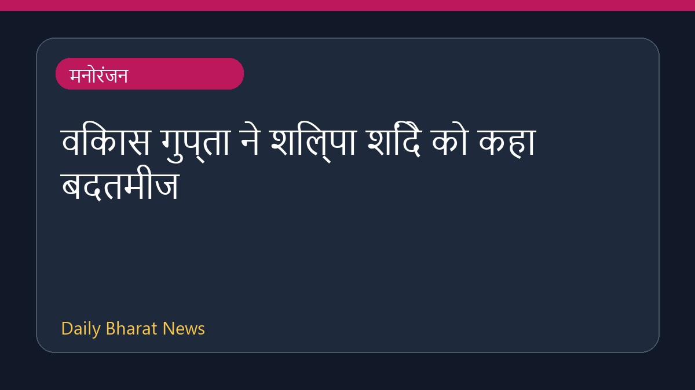

विकास गुप्ता ने शिल्पा शिंदे को कहा बदतमीज

विकास गुप्ता ने हाल ही में सार्वजनिक रूप से शिल्पा शिंदे की कड़ी आलोचना की है। उन्होंने शिल्पा पर शिवानी जोशी के निजी जीवन और वर्जिनिटी पर चर्चा करने के साथ-साथ राम कपूर का वजन कम करने पर मजाक उड़ाने का आरोप लगाया। विकास ने शिल्पा से सवाल किया कि क्या उन्हें इस बात पर शर्म नहीं आती। उन्होंने शिल्पा को नकारात्मक और बदतमीज करार दिया है। इस घटना को लेकर विभिन्न मीडिया प्लेटफ़ॉर्म पर चर्चाएं सामने आई हैं, जहां दोनों के बीच के इस विवाद को प्रमुखता से रिपोर्ट किया गया है।